Crating and editing files in TagSpaces
Table of Contents
Creating files
Besides opening and previewing various file types, TagSpaces can also create new files of some text-based formats. File creation is a functionality that allows TagSpaces to become an effective note-taking application.
To create a new file in TagSpaces you have many options. The easiest one is from the button with plus icon, which almost always visible in the application

On the desktop version of the app you can also use the File menu from the Main menu. If the main menu is not visible you can open it by pressing the ALT keyboard key.
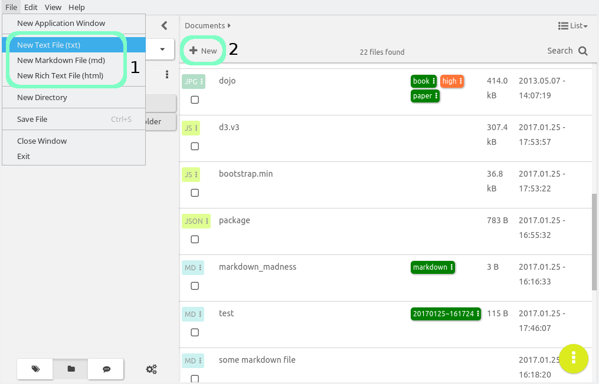
The triggering of the file creation action will open a Create New Document dialogue, where you can adjust the file name of the file, which will be create in area (1). In are (2) you can enter the text context of the file, you can copy and paste plain text, markdown or even HTML content here. This area could be left also empty allowing you enter content later. In a area (3) you should specify the type of the text content. Currently the following file formats are supported:
- Plain text - files created with this format will have the
.txtfile extension - MarkDown - files created with this format will have the
.mdfile extension. Learn more about the markdown format here - Rich Text - files created with this format will have the
.htmlfile extension.

In the last section (4), you can specify where the file should be create. The initial path here is taken automatically from the currently opened folder.
Editing files
Besides opening and viewing files, TagSpaces can also edit specific file formats. Just like File Browser Perspectives, and File Preview extensions, the different types of File Editors are also modular extensions, making TagSpaces' file editing capabilities extendable. Currently three editor extensions ship bundled with the application:
- HTML Editor -
HTMLfiles serve a specific purpose in TagSpaces. They are treated as RichText documents, that can not only be previewed, but visually edited in a full-featured WYSIWYG editor.
- Text Editor - This editor opens all other text-based file formats, and unknown file types alike. For
.txtand miscellaneous files, it behaves as a simple editor, with added syntax highlighting capabilities for common programming languages and a preview for MarkDown. (.md)
- JSON Editor - An interactive visual editor for editing and manipulating
JSONfiles.
If the file format of the currently opened files is supported for editing the EDIT button will appear in the top right corner of the application. Clicking on this button will activate the edit mode for this file.
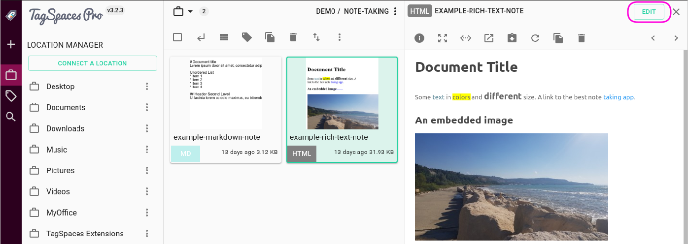
Once in the edit mode the edit button will disappear and on its place two new buttons will be visible. Pressing on button (1) will save the current changes. This can be done in the most cases also with the CTRL+S key combination. Pressing the button (2) will activate the preview mode by leaving the edit mode. If the changes were not saved, the app will ask you to save them.
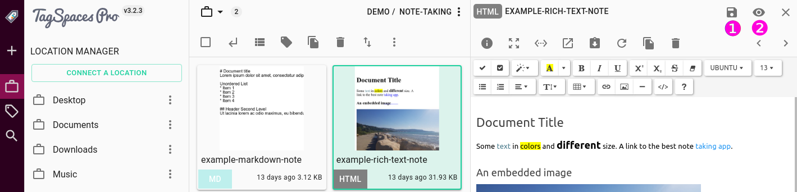
Increasing your workspace
All of the above editors, will initially open on the right pane of the main area. You can expand your workspace to be able to see and edit more of the document, in two ways:
- Expand the editor to fill the whole width of the TagSpaces UI, by pressing the Expand button (2) as shown in the next screenshot.
- Pressing the Fullscreen button (1) will open only the area of the editor in full screen mode. To exit fullscreen mode, press the (X) button located at the top right or just press the ESC key on your keyboard.

Distraction free editing
By using the fullscreen button you can edit documents in the so called distraction free mode. This will expand the editor area to fill the entire screen area, with no window decorations, or other UI elements, while any applicable formatting toolbars and the Floating Action Button will still be shown.
HTML Editor
HTML files are treated like RichText documents in TagSpaces. When you edit a .html document, the fully formatted preview of the file will be replaced by a WYSIWYG (What You See Is What You Get) HTML editor.
In editor mode the HTML document will keep its formatting, but you are now able to edit the text, making the HTML editor behave like a RichText editor. On the top of the view, you will find a formatting toolbar, with with you can fully control the appearance of the document
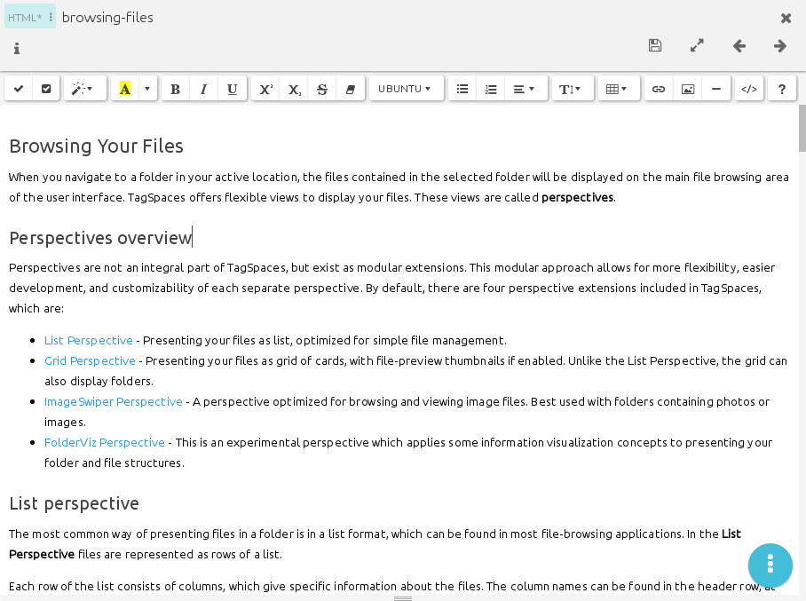
The formatting toolbar offers some common features, you can find in any RichText or WYSIWYG HTML editor, with some features specific to TagSpaces. The overflow menu options from the HTML viewer are not implemented in the HTML Editor.
Toolbar Buttons
The toolbar buttons are grouped together based on similar behavior or functionality. The major groups are illustrated below
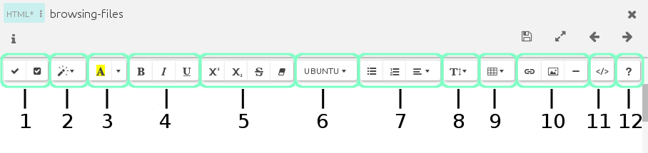
- Manage Checkboxes (1)
- Paragraph Style (2)
- Color (3)
- Font Styles (4 and 5)
- Font Family (6)
- Lists, and Alignment (7)
- Line Height (8)
- Insert Table (9)
- Insert Link, Image and Horizontal Ruler (10)
- Code View (11)
- Help (12)
Manage Checkboxes
This is a compound button, consisting of two parts:
- Add checkbox (1)
- Toggle all checkboxes (2)
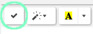
Pressing Add checkbox will insert an interactive, clickable checkbox into your document, which can be used to create e.g. ToDo lists. To lean more about this feature, scroll down to the Creating ToDo Lists section.
Pressing the Toggle all checkboxes button will select or deselect all the checkboxes present in the HTML document, regardless of their location
Hint: when some checkboxes are manually selectecd, while others are deselected, the *Toggle all checkboxes/ will check all the unchecked ones. Pressing the button again will only un-check the ones that have been checked via the button. the ones that were manually checked will remain unchanged.
Paragraph Style
This button will open a drop down menu, from which you can select a paragraph style to apply. When selecting an option, the chosen style will be applied to the entire current paragraph (where the cursor is located), without having to make a selection first. If you do select some text first, the style will only be applied to the current selection.

Available styles are:
p represents the
<p>HTML tag (normal paragraph). It can also be used to remove other styles. The hotkeyCtrl+0is assigned to this action.blockquote will enclose the current paragraph into
<blockquote>tags.pre will enclose the current paragraph into
<pre>(preformatted text) tags.H1 to H6 mean different heading levels from 1 (largest) to 6 (smallest). Selection one of these options will enclose the entire paragraph into
<h1>to<h6>tags. HotkeysCtrl+1toCtrl+6can also be used to set headings, where the number reflects the level of the desired heading.
Color
This is a compound button, which has two parts

The left part Recent color will apply the last used background and foreground color on the text. The applicable background and foreground colors are reflected on the button itself

The right part More Color will open a dropdown menu, from which you can choose both background and foreground colors to apply, while the default color values can be reset with their respective buttons.

Font Styles
The following groups represent font styles, that can be applied to either a selection, or as a toggle, to mark any text to be written with the given style, until the toggle is switched off.

Bold (1), Italic (2), and Underline (3) will mark either the selected text, or the text that follows as bold, italic or underlined, replectively. These three buttons also have hotkeys assigned. Ctrl+b will toggle bold, Ctrl+i toggles italic, while Ctrl+u toggles underline.
Superscript (4), and Subscript (5) will mark either the selection or the text that follows to be superscript or subscript respectively. Strikethrough (6) will create strikethrough text, and Remove Font Style (7) will remove all formatting. (This last option is only applicable to selections.)
From this group, only two options have hotkeys assigned. Strikethrough can be toggled with Ctrl+Shift+s, while the Remove Font Style hotkey is Ctrl+\
Font Family
This is the last of the font style buttons. It can set the selection or the text that follows to a specific font family.

Hint: The options presented here might depend on your operating system and the fonts installed
Lists, and alignment
This is a compound group, which offers different options, that all work on the currently active paragraph, as a toggle, without the need to make a selection first.

The first two buttons offer toggles for Unordered List (1), and Ordered List (2). The last button in the group will open a dropdown menu which offers four standard alignment options Left (3), Center (4), Right (5), and Full Justify (6); and also the option to Decrease Indent (7), or Increase Indent (8).
The hotkeys for these operations are:
- Unordered List -
Ctrl+Shift+7 - Ordered List -
Ctrl+Shift+8 - Left align -
Ctrl+Shift+L - Center align -
Ctrl+Shift+E - Right align -
Ctrl+Shift+R - Justify full -
Ctrl+Shift+J - Decrease indent -
Ctrl+Shift+Tab - Increase indent -
Ctrl+Tab
Line Height
Offers a dropdown menu that allows you to set the line-height of either the active paragraph or the currently selected paragraphs between 1.0 and 3.0 by increments of 1.0, 1.2, 1.4, 1.5, 1.8, 2.0, and 3.0

Hint: When you make a selection, you do not need to select the entire paragraph. The selection's edges will mark active paragraphs. The line height adjustment will be performed on all full paragraphs, starting with the one inside which the selection starts, and ending with the one, inside which the selection ends.
Insert Table
This button will open a drop down graphical menu for drawing a table grid, with a maximum size of 10x10, that can be easily inserted into the document

Insert Link, Image, and Horizontal Ruler

This group has the following three buttons
- Insert Link (1)
- Insert Image (2)
- Insert Horizontal Ruler (3)
Insert Link
The first button will open a dialog, which allows you to add a hyperlink to the text. The dialog allows for specifying the text to display, and the link to follow, when clicked, with a checkbox allowing to set the link to be opened in a new tab or window. The dialog can also be invoked by pressing Ctrl+K

If you select some text to apply the link to, before pressing the button, the selection will automatically populate the Text to display field. If you made no selection, you will need to specify a text to be displayed. If you leave the field empty and start typing a URL, it will automatically populate the text to display field, which you can later modify.
To edit or remove links, you can just click inside the link, and use the buttons that appear on the popup.

The first button (1) will allow you to edit the link, while second (2) will remove it.
Hint: Links can also be added to the documents by typing the URL, and pressing enter. A well formed URL will automatically turn into a link.
Insert Image
The second button in the group will also open a dialog, which lets you insert a picture from either your computer, or from a URL.

Insert Horizontal Ruler
The last button will insert a simple horizontal ruler, (a HTML <hr/> tag) at the point where the cursor is currently located. The hotkey to quickly insert a horizontal ruler is Ctrl+Enter.
Hint This button does not respect paragraph endings. If you press this button at the middle of a paragraph, it will break the paragraph at that point.
Code view
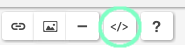
This is a toggle to show plain HTML code on a dark background, where the formatting buttons are disabled, and you can edit the HTML code directly.
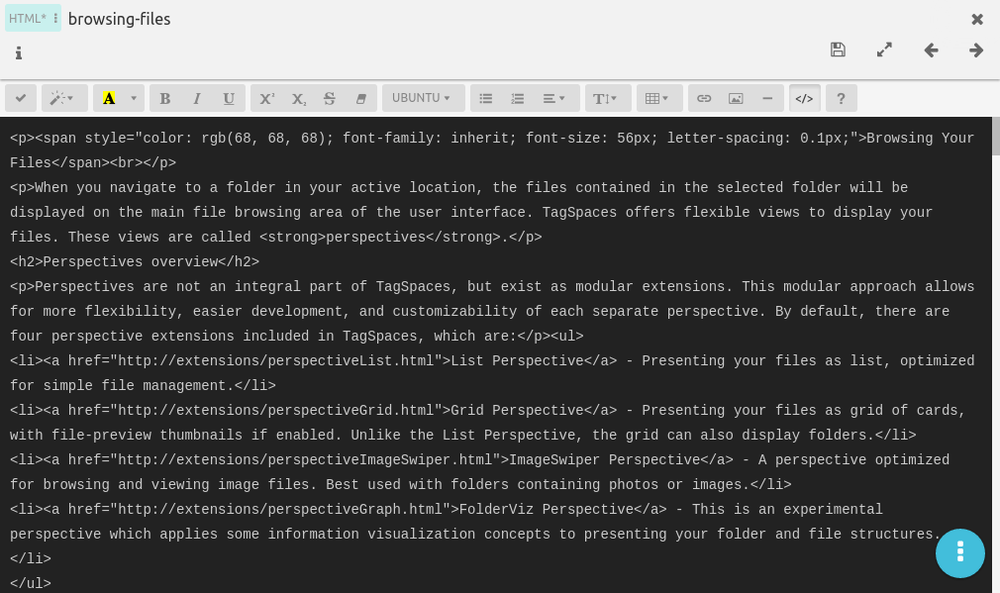
Pressing the button again, will return to the WYSIVYG mode.
Hint: Code highlighting for the HTML view is not currently implemented.
Help

The last button will display a summary of all the keybindings. If you prefer to use hotkeys, you will find a quick reference here.

Creating ToDo Lists
The recently added feature of interactive checkboxes makes TagSpaces ideal for creating simple, yet flexible ToDo lists. Pressing the Add Checkbox Button button will insert a checkbox anywhere in the text.
For ToDo Lists, you would ideally want the checkbox to be the very first character of a list, although you are not limited by placement. To make your list multi-level (i.e. sub-items under list items), you can use the Increase Indent feature (see Toolbar Buttons -> Lists and Alignment) on the desired line, by either pressing its button or using its hotkey (Ctrl+Tab to increase indent, Ctrl+Shift+Tab to decrease intent).
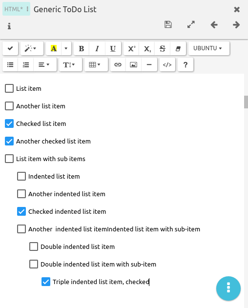
Hint The interactive checkboxes only work in editor mode. When in HTML preview mode, you can see the current state of the box, but cannot change it. To make a list interactive, switch to editor mode, by pressing the little pencil icon at the top of the preview.
Key bindings
Below you can find a summary of all the hotkeys you can use in the HTML Editor
Hint: Mac users should use the
Cmdkey, whereCtrlis mentioned
Ctrl+Z- Undo the last commandCtrl+Y- Redo the last commandTab- Insert TabShift+Tab- Remove tabCtrl+B- Set a bold styleCtrl+I- Set an italic styleCtrl+U- Set an underline styleCtrl+Shift+S- Set a strikethrough styleCtrl+\- Clear all stylesCtrl+Shift+L- Set left alignCtrl+Shift+E- Set center alignCtrl+Shift+R- Set right alignCtrl+Shift+J- Set full alignCtrl+Shift+7- Toggle unordered listCtrl+Shift+8- Toggle ordered listCtrl+Tab- Indent on current paragraphCtrl+Shift+Tab- Outdent on current paragraphCtrl+0- Change current paragraph's style to plain paragraph (<p>tag)Ctrl+1- Change current paragraph's style to H1Ctrl+2- Change current paragraph's style to H2Ctrl+3- Change current paragraph's style to H3Ctrl+4- Change current paragraph's style to H4Ctrl+5- Change current paragraph's style to H5Ctrl+6- Change current paragraph's style to H6Ctrl+Enter- Insert horizontal ruleCtrl+K- Show Link Dialog
Text Editor
When you edit a plain text file, or any unsupported file format that displays the edit button, the simple text editor will open.
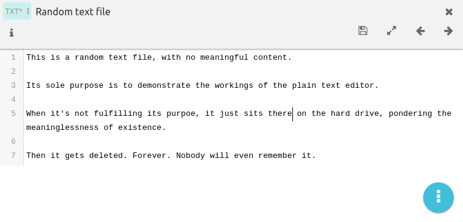
The only extra the text editor offers is basic code highlighting for some common programming languages, and numbered lines.

The text editor will keep the option to print from the plain text viewer.
MarkDown Editor
When you open a MarkDown file for editing from the MarkDown Viewer, it will be opened wit the same Text Editor, any plain text file would, offering inline highlighting of Markdown syntax.

The difference between MarkDown and plain text editors is the two additional functions in its FAB Oveflow Menu: MarkDown Preview (1), or MarkDown Help (2).
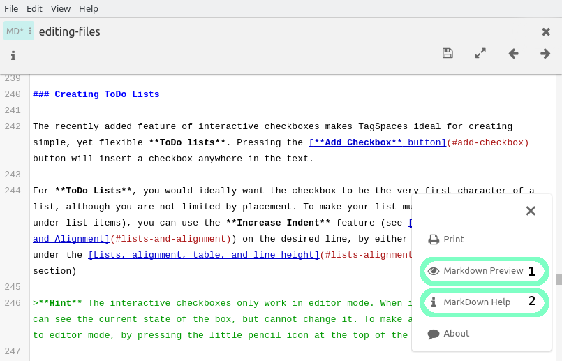
The first option will open a popup window, presenting a formatted preview of the MarkDown file, similar to what you would see in the MarkDown viewer
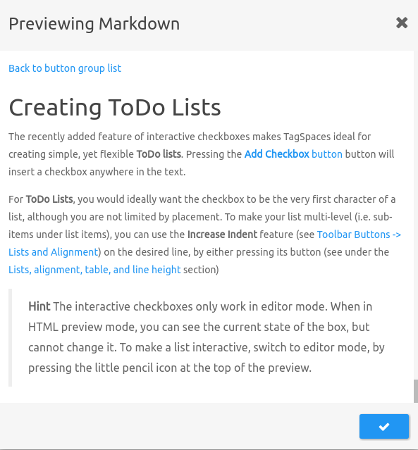
The second option will offer some basic help about MarkDown syntax and formatting
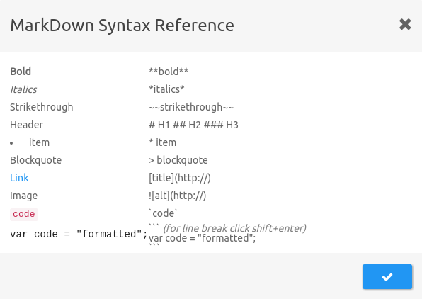
Linking local files and images
Markdown editor will also allow you to link local files and images, from within your connected location, using a path, relative to your currently active folder. Linked local images will be shown embedded in the current markdown preview, while linked files will open in the default external application, defined by your operating system.
For example he link [link text](images/picture.jpg) will show the file named picture.jpg (located in the images subfolder of the folder your file is located) in the markdown viewer; while [link text](files/more_files/example.pdf) will open the file named example.pdf (located in the more_files subfolder of the files folder, located in the current folder) in an external PDF viewer.
To enter a relative path, you can usually use UNIX style slashes (/) in paths, e.g. path/to/file/filename.ext, as node.js upon which TagSpaces is built, will handle them properly even on Windows. This allows for interoperability across different Operating Systems. If you only use Windows however, you can use a backslash (\), e.g. path\to\file\filename.ext, if you prefer to, but such paths will not be understood on any other system, including Android.
Hint TagSpaces only understands relative paths. You cannot reference any level above your current folder, or the root of your connected location, but might only link files located in the currently active folder, or an subfolders within.
JSON Editor
Editing JSON files will build upon the functionality you've already seen in the JSON Preview mode.
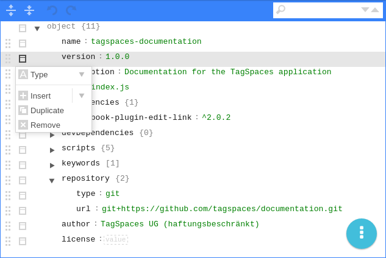
The top row of the editor will offer a basic toolbar, with some common actions such as Expand all fields (1), Collapse all fields (2), Undo and Redo (3) and a search box (4)

Each field has some useful controls that can help manipulate and rearrange JSON files easily.
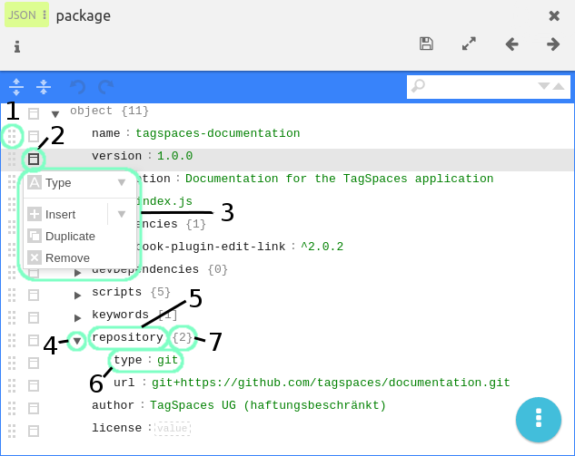
On the left edge, there is a drag handle, allowing for easy movement of each row. (1)
Next to the drag handle there is an Action Menu Button (2), which opens the Action Menu (3), offering useful actions on each field, such as:
You can choose or change the Type of the field, choosing from Auto, Object, Array, or String
You can Insert an Array, Object, or String inside any field. (There is also an Auto mode for insertion). Inserting will place the new field before the selected field.
When selecting the Action menu on the last member of an Object or Array, you can also Append the same categories, which will place the new field after the last item.
Objects and Arrays will also allow for Sorting, as either Ascending or Descending*
Finally you can Duplicate or Remove any field from the hierarchy, (apart from the root)
To the right of the Action menu button, there is an Open/Close chevron (4), which can expand or collapse each field.
Finally you have the field itself, with one (5) (for arrays and objects) or two editable sections (6) (for string type), and an optional, read only information field (7), that displays the number of sub-fields, in either curly brackets
{ }(for objects), or square brackets[ ]() for arrays.
The FAB Overflow Menu will offer to either Print the file, or display a JSON Help menu, which gives a summary of the numerous key combinations that can be used to work on JSON files even faster.